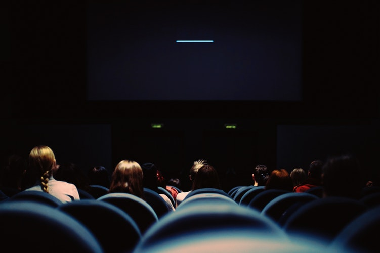

문화 속에서 다양한 형식으로 드러나는 자막에 대한 작업과 단상을 기록하는 공간입니다.

넓게 보면, 자막이란 건 영상화면 속에서만 존재하는 것이 아닙니다. 언어가 다른 것 무엇이든 소비할 때,
우리는 자막과 비슷한 기능을 하는 무언가를 필요로 하게 돼죠.
저의 목표는 가능한 다양한 형식 속에 존재하는 외국어를 다루는 것입니다. 그리고 이곳은 그 작업 과정과,
관련된 갖가지 생각과 주제들을 다루어보기 위해 만들어진 공간입니다.
Youtube 채널: 서람의 영한필터